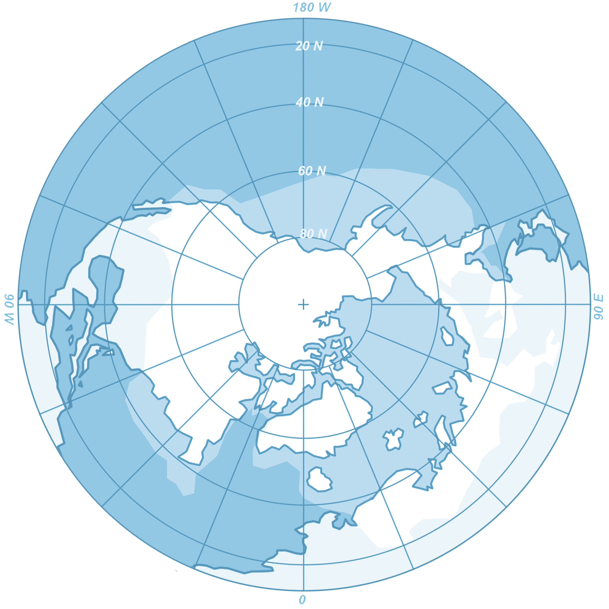
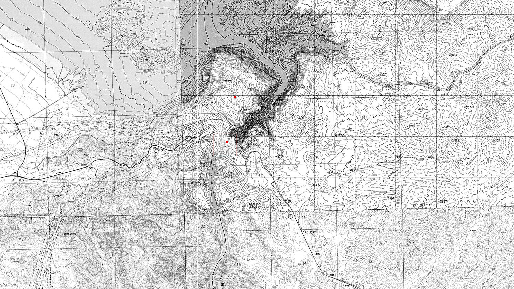
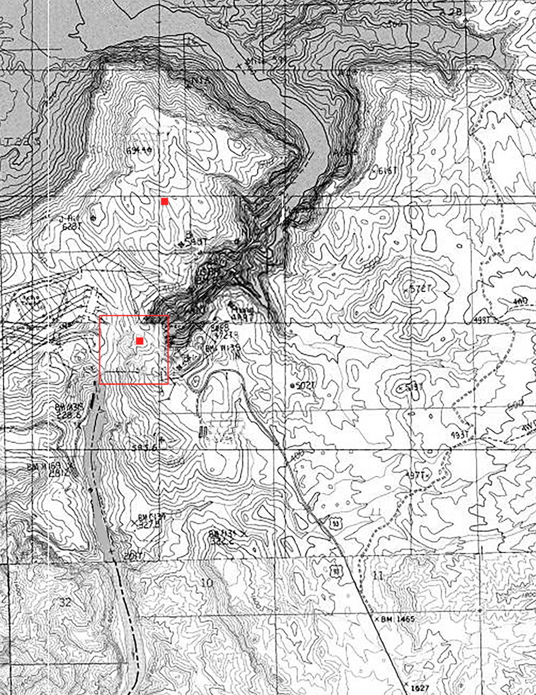
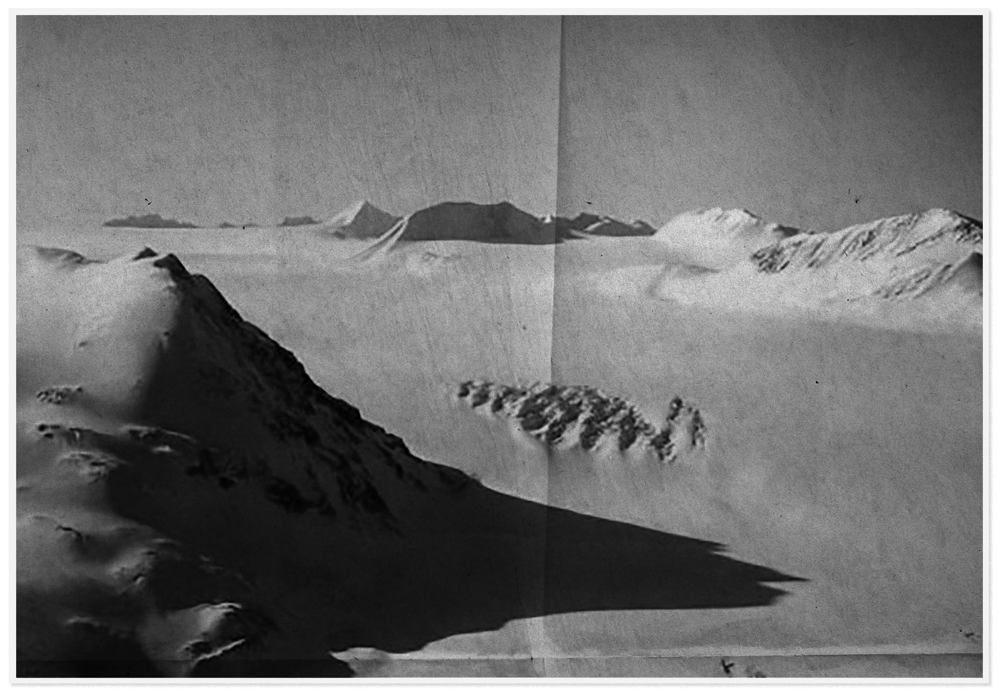
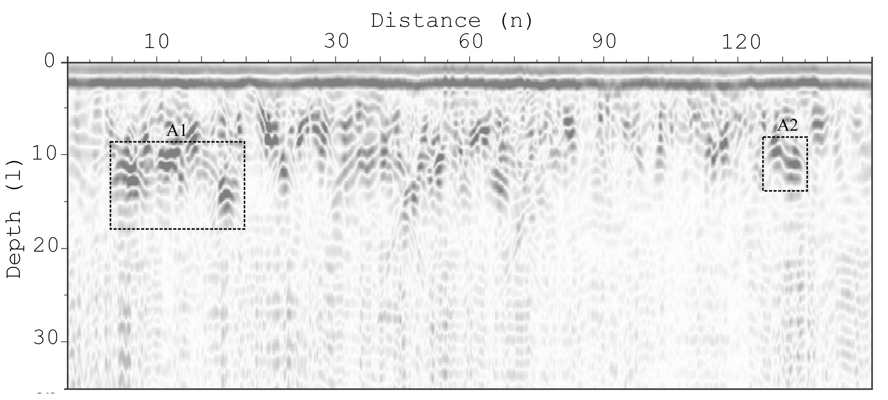

Full results (I-VII)
Full results (I-VII)
CENTRAL C0NTINENTAL GE0L0GICAL STUDY (CCGS)SURVEY No. 2 ON "SITE 56"56°00'56.0"N 114°44'16.0"WO4/O5/58 - O9/29/58
Archaeological Site 56, Expedition No. 2:Findings, Theories, and RecommendationsBy Dr. █████ ███████ and Dr. ███████ ████
SCIENTIFIC OBJECTIVES..................................1
FIELD PERSONNEL........................................1
SITE HISTORY...........................................1
MONTHLY OPERATIONAL & WEATHER LOGS.....................2
04 REPORT.....................3
05 REPORT.....................5
06 REPORT.....................7
07 REPORT.....................9
08 REPORT....................11
09 REPORT....................15
CONCLUSIONS............................................16
FIGURE 1: Map of village, site, and surrounding area (3)
FIGURE 2: Reproduction of the etching (6)
FIGURE 3: Postcard (10)
FIGURE 4: Periapsis long-exposure photo (11)
APPENDIX I: Hypothesis diagrams (16)
APPENDIX II: GPR imaging of Site 56 subsurface (17)
APPENDIX III: Meteorological Log (18)
SCIENTIFIC OBJECTIVES Archaeological and geological data collection from Site 56 in the western ice sheet. Estimate approximate age of Site 56 etching, and assemble other archaeological data for further study. Geological survey of site and surrounding glacial area, including use of Ground Penetrating Radar (GPR) to image beneath the ice. Deliver recommendations for possible future excavation.
FIELD PERSONNEL Dr. █████ ███████ , geologist, ███████████ [Reporting] Dr. ███████ ████, archaeologist, ███████, ███████████
SITE HISTORY FIGURE 1a: Region. Site 56 is located in the western region of the continental ice sheet, east of all alpine glacier activity. The ice sheet in this region is among the thickest on the continent owing to the low elevation of the ground below. Annual glacial movement is historically very low. There are two glacial lakes, both marked on this map, which thaw for roughly 2/10 months of the year. Lower right: ███'████ Village. Lower middle: Location of Site 56.
FIGURE 1: TOPOGRAPHICAL MAP
 FIGURE 1a: Region. Site 56 is located in the western region of the continental ice sheet, east of all alpine glacier activity. The ice sheet in this region is among the thickest on the continent owing to the low elevation of the ground below. Annual glacial movement is historically very low. There are two glacial lakes, both marked on this map, which thaw for roughly 2/10 months of the year. Lower right: ███'████ Village. Lower middle: Location of Site 56.
 FIGURE 1b: Detailed view of Site 56 and surrounding region. ███'████ Village sits at an elevation above the glacial lake basin. Site 56 is located at the lowest accessible (non-flooding) elevation point in the spring months.
Dr. ████████ to CCGS H.Q. 04/05 - 05/05
04/05 - Arrived via sled, late. Lodging with locals in ███'████ Village. Have been accommodating. Hired local dog sled for daily travel to and from Site 56. Hope to begin tomorrow. Dr. ████, so far, less professional than hoped for in a research partner.
04/06 - More time for a detailed entry today. Confined due to snowstorm. We arrived very late last night, because our departure was delayed, because Dr. ████ was delayed. Our journey to arrive here was several days of sled travel over-land, mostly on snowpack. It was scheduled to be a three-day trip, but instead took four. My geological equipment is delicate, particularly the shortwave and LFT. It cannot stand cold for such a length of time. My personal provisions were also spoiled by a water leak.
I have spent the unanticipated day off reviewing and reorganizing my notes, and salvaging what I could from my water-damaged provisions.
Looking forward to a day outside after a very long day inside.
04/07 - No work due to snowstorm.
04/08 - No work due to snowstorm.
04/09 - Snowstorm lasted three days. Today we made our first expedition to the site.
The domed tent left by our predecessors last summer was not sturdy enough to withstand the winter. Tent walls collapsed, and in some places, snow was waist-high. Dr. ████ and I spent the better part of today clearing it. We are beginning to become better acquainted. Dr. ████ is an industrious cleaner and made no complaints about my slowness due to my handicap. With help from our sled driver, ███████████, we reinforced the tent against further damage.
The site is indeed strange. Its smoothness is unnatural.
Our study begins in earnest tomorrow.
04/13 - Site 56 is a deposit of several types of rock with inlay etchings. The stone inlays and etchings have been heavily worn pitted by centuries of weathering and glacial activity. Dr. ████ and I are tasked with surveying, assessing, and documenting the site and surrounding area, and recommending next steps. I will study the deposits, collect samples, and make a detailed GPR study of the terrain below the ice. At first glance, I concur with my predecessor's conclusion that this is not a naturally formed deposit. As for the significance of these ancient etchings, I leave that to my associate, the archaeologist. Very little is known about the civilization that once existed here.
(See Fig 2.) Dr. ████ hypothesizes that the etchings are of a religious or possibly cartographic nature.
I have a theory of my own. As of today, my low-frequency transmitter (LFT) has detected a large cavity at 20 lengths underneath us. I believe this is a tomb.
| Week 1 | / | / | / | / | 04/05 | 04/06 | 04/07 | 04/08 | 04/09 | 04/10 |
| 2.65º | 2.42º | 2.41º | 2.57º | 2.56º | 2.43º | |||||
| Overcast | Snowstorm | Snowstorm | Snowstorm | Light snow | Overcast | |||||
| Week 2 | 04/11 | 04/12 | 04/13 | 04/14 | 04/15 | 04/16 | 04/17 | 04/18 | 04/19 | 04/20 |
| 2.39º | 2.53º | 2.65º | 2.42º | 2.41º | 2.57º | 2.56º | 2.73º | 2.71º | 2.73º | |
| Overcast | Overcast | Overcast | Overcast | Overcast | Overcast | Overcast | Snow | Snow | Overcast | |
| Week 3 | 04/21 | 04/22 | 04/23 | 04/24 | 04/25 | 04/26 | 04/27 | 04/28 | 04/29 | 04/30 |
| 2.75º | 2.73º | 2.63º | 2.59º | 2.51º | 2.43º | 2.75º | 2.76º | 2.60º | 2.63º | |
| Overcast | Overcast | Light snow | Overcast | Overcast | Overcast | Light snow | Snowstorm | Overcast | Overcast |
TEMPERATURE by day (K2) Weeks 1-3
04/28 - Late winter storm.
04/29 - Snow melted quickly for travel. ███████████ the sled driver informs us that means spring is close at hand, though it does not feel that way. ███'████ Village is already making preparations for the periapsis celebration, four months from now.
04/32 - Dr. ████ and I have an ongoing debate about the nature of the deposit upon which the etchings were made. The dispute is an exercise, obviously—it would be irresponsible to commit to a conclusion at this stage.
Dr. ████ proposes that the deposit is endogenous. I reply that it is far too smooth and mineralogically diverse to be naturally formed.
My associate disagrees. Dr. ████ lights a match and holds it close to the rock. "Look. Look how the shadows bounce. Or rather, do not. This was not smoothed or sanded by any ancient tools," Dr. ████ says.
I remind Dr. ████ that I am the geologist. He replies that that much is obvious from my "clunky" use of the word "mineralogically."
The ongoing thaw will continue to reveal more of the site.
| Week 4 | 04/31 | 04/32 | 04/33 | 04/34 | 04/35 | 04/36 |
| 2.63º | 2.65º | 2.67º | 2.50º | 2.52º | 2.54º | |
| Overcast | Overcast | Overcast | Overcast | Overcast | Overcast |
TEMPERATURE by day (K2) Week 4
05/04 - Supply drop and report submission.
QUADRANTS MAPPED WITH GPR: Ia, IIa, IIIa. (See Appendix II.)
Dr. ████████ to CCGS H.Q. 05/06 - 06/05
05/06 - Dr. ████'s presence has become an intolerable hindrance. ████'s methodology is lackadaisical and his behavior at the site, as well as in town, is unprofessional. There are many days when ████ does not even accompany me to the site. When ████ does, ████'s presence is a distraction and sometimes a genuine impediment.
To the dispatcher who receives this report at the end of 05, please copy to department management. If the situation does not improve, I will submit an official complaint.
| Week 5 | 05/01 | 05/02 | 05/03 | 05/04 | 05/05 | 05/06 | 05/07 | 05/08 | 05/09 | 05/10 |
| 2.75º | 2.73º | 2.63º | 2.59º | 2.51º | 2.43º | 2.75º | 2.76º | 2.60º | 2.63 | |
| Snow | Light snow | Overcast | Overcast | Overcast | Overcast | Overcast | Overcast | Overcast | Overcast | |
| Week 6 | 05/11 | 05/12 | 05/13 | 05/14 | 05/15 | 05/16 | 05/17 | 05/18 | 05/19 | 05/20 |
| 2.39º | 2.53º | 2.65º | 2.42º | 2.41º | 2.57º | 2.56º | 2.73º | 2.71º | 2.40º | |
| Overcast | Overcast | Overcast | Overcast | Overcast | Overcast | Overcast | Snow | Snow | Overcast |
TEMPERATURE by day (K2) Weeks 5-6
05/12 - Visited today by one of the local children who originally discovered the etching. Told us that the children use the area for an imaginary game taking place on the moon. They act as alien moon people who study the Earth. Because of the Earth's atmospheric condition, the moon aliens erroneously believe it to be a gas planet. Quite a pastime for children who can almost never see the sky.
Dr. ████ asked the child whether she had ever seen the moon, and the child said yes, during the periapsis that took place when she was 4 ('53). I told the child that was unlikely, since the lunar phase was waning crescent during the periapsis of that year, and Dr. ████ told me to "Shut up."
✧
✧
✧
✧
✧
Cold last night?
Yes.
Still not used to it?
What gave it away?
I could hear your teeth chattering all night. Kept me awake.
My apologies.
✧
✧
✧
✧
✧
05/20 - ███'████ Village experienced power generator failure today.
05/22 - This week ███'████ Village is experiencing generator problems due to the unusually harsh spring. Being from the equatorial regions, I am unaccustomed to such cold. Our host, ████████, insists that we sleep around the hearth fire with her family tonight, which I consider unnecessary.
05/25 - Power restored. Temperature rose sharply today.
| Week 7 | 05/21 | 05/22 | 05/23 | 05/24 | 05/25 | 05/26 | 05/27 | 05/28 | 05/29 | 05/30 |
| 2.35º | 2.33º | 2.53º | 2.49º | 2.75º | 2.75º | 2.76º | 2.77º | 2.78º | 2.79º | |
| Overcast | Overcast | Light snow | Overcast | Overcast | Overcast | Overcast | Overcast | Overcast | Overcast | |
| Week 8 | 05/31 | 05/32 | 05/33 | 05/34 | 05/35 | 05/36 | 05/37 | |||
| 2.75º | 2.73º | 2.80º | 2.76º | 2.75º | 2.75º | 2.77º | ||||
| Overcast | Overcast | Overcast | Overcast | Overcast | Overcast | Overcast |
TEMPERATURE by day (K2) Weeks 7-8
05/29 - My associate has become quite obsessed with the etching. Dr. ████ speculates on it nonstop, draws numerous reproductions of it, takes innumerable rubbings (see Fig. 2 for one example). Time could be better spent investigating the surrounding area, in my opinion. The thaw will make that easier. It is coming quickly now.
06/04 - Supply drop and report submission.
QUADRANTS MAPPED WITH GPR: IV, V, VI. (See Appendix II.)
FIGURE 2: Etching (rubbing by Dr. ████)
✧
✧
✧
✧
✧
You'll never know for sure.
What?
The etching. You'll never know for sure. At best you'll have a workable theory.
Yeah, and?
That doesn't bother you? That you'll never know for certain?
It's not about answers for me. I like the questions. One answer, three more questions. Like a fractal. It's addicting.
✧
✧
✧
✧
Dr. ████████ to CCGS H.Q. 06/06 - 07/05
06/06 - Following feedback dispatch from H.Q., I will refrain from embellishing my reports with personal detail.
| Week 9 | 06/01 | 06/02 | 06/03 | 06/04 | 06/05 | 06/06 | 06/07 | 06/08 | 06/09 | 06/10 |
| 2.75º | 2.77º | 2.76º | 2.80º | 2.75º | 2.65º | 2.66º | 2.67º | 2.78º | 2.78º | |
| Overcast | Overcast | Overcast | Overcast | Overcast | Overcast | Overcast | Overcast | Overcast | Overcast |
TEMPERATURE by day (K2) Week 9
06/15 - Removed tent covering the site, as temperatures are no longer falling below 2.73º. Glacial lake is visible from the site. It is not very deep yet, but locals are still enjoying it for recreation. Dr. ████ still obsessed by the etching. ████ is certain that it is a calendar of some kind. When asked why a civilization would need to carve its calendar into a rock, ████ shooed me away.
| Week 10 | 06/11 | 06/12 | 06/13 | 06/14 | 06/15 | 06/16 | 06/17 | 06/18 | 06/19 | 06/20 |
| 2.79º | 2.77º | 2.80º | 2.83º | 2.84º | 2.85º | 2.87º | 2.81º | 2.82º | 2.83º | |
| Overcast | Overcast | Overcast | Overcast | Overcast | Overcast | Overcast | Overcast | Overcast | Overcast |
TEMPERATURE by day (K2) Week 10
✧
✧
✧
✧
It sort of looks like your GPR pictures.
Maybe your ancient people had radar.
It could be a calendar.
Why would they record a calendar in this way?
Well it's clearly a schematic.
You're making assumptions.
Let's just assume for a minute. What if it's a plan for a machine?
...A machine? How could it be a machine? These people lived here before the glaciers—that was thous—
I don't know. We don't know.
And that still doesn't answer the question: why etch it in stone?
Well, what if it's an important machine? Like, a machine of civic proportions. Like the thermo in the capital.
But they didn't have that kind of techn—
That we know of.
But you can't—
Just listen. We don't know almost anything about the people who lived here. We don't even know how old this is. What was life like then? What was this landscape like? We have no idea.
We do. I do. It was a desert. Before that it was a jungle. Before that it was molten rock.
And before that we were a star.
And before that we were nothing.
✧
✧
✧
✧
| Week 11 | 06/21 | 06/22 | 06/23 | 06/24 | 06/25 | 06/26 | 06/27 | 06/28 | 06/29 | 06/30 |
| 2.78º | 2.79º | 2.79º | 2.59º | 2.81º | 2.83º | 2.79º | 2.76º | 2.80º | 2.81º | |
| Overcast | Overcast | Overcast | Overcast | Overcast | Overcast | Overcast | Overcast | Light rain | Overcast | |
| Week 12 | 06/31 | 06/32 | 06/33 | 06/34 | 06/35 | 06/36 | ||||
| 2.83º | ? | ? | 2.81º | 2.80º | 2.65º | |||||
| Overcast | Overcast* | Overcast* | Rain | Overcast | Overcast | *Presumably. |
TEMPERATURE by day (K2) Weeks 11-12
06/32 - Dr. ████ reporting. - Dr. ████████ transported to ██████ Base Hospital for emergency medical care.
QUADRANTS MAPPED WITH GPR: VII, VIII. (See Appendix II.)
Dr. ████ and Dr. ████████ to CCGS H.Q. 07/06 - 08/05
07/06 - Dr. ████ reporting. - Supply drop and report submission (hard copy, don't know/have permission to use Dr. █'s shortwave). Also handed off some mail.
07/11 - Dr. ████ reporting. - Safe return of ████████, who insists he is "absolutely fine" and will start work again tomorrow bright and early. Not a good idea, if you ask me!
| Week 13 | 07/01 | 07/02 | 07/03 | 07/04 | 07/05 | 07/06 | 07/07 | 07/08 | 07/09 | 07/10 |
| 2.79º | 2.78º | 2.83º | 2.85º | 2.65º | 2.80º | 2.81º | 2.82º | 2.76º | 2.83º | |
| Overcast | Overcast | Overcast | Overcast | Overcast | Overcast | Overcast | Overcast | Overcast | Overcast | |
| Week 14 | 07/11 | 07/12 | 07/13 | 07/14 | 07/15 | 07/16 | 07/17 | 07/18 | 07/19 | 07/20 |
| 2.83º | 2.85º | 2.85º | 2.77º | 2.75º | 2.85º | 2.86º | 2.85º | 2.77º | 2.73º | |
| Overcast | Rain | Overcast | Overcast | Overcast | Overcast | Thunder | Rain | Overcast | Overcast |
TEMPERATURE by day (K2) Weeks 13-14
07/13 - Dr. ████████ reporting once again. Dr. ████ convinced me to take one more day's rest, and today we are back at the site. I look forward to resuming my study. The GPR mapping is progressing faster than I expected, and revealing a far more complex substructure than I anticipated. I hope to have a rough map of the substructure by the end of our survey, 9 weeks from today.
✧
✧
✧
✧
You didn't have to wait for me here.
I know. I don't mind. It's lonely out at the site.
How are you feeling?
I'm all right. Thank you for the postcard.
✧
✧
✧
✧
07/19 - In this hemisphere, this month is the warmest of the year, marking the lowest point of the ice, the deepest melt of the lake, and revealing the largest area of the site. With the solstice fast approaching, and the periapsis with it, the temperature stays above freezing every day and most nights. The thaw has reached the area around the village; we hear water all the time. I suspect some of what my LFT is detecting are seasonal underground rivers.
In my absence, Dr. ████ adopted a new approach; leaving the etching for future consideration, ████ is entertaining my tomb theory, and has begun to search for an entrance.
07/21 - In ███'████ Village, the periapsis celebration lasts over a week. It will probably begin a week from today. Excitement is growing.
Our host ████████ showed us a so-called almanac, which contained speculative "predictions" about the exact time and conditions of this year's atmospheric event. It seems no matter where in the world one travels, the periapsis is always clouded (as it were) by this sort of superstition. I in turn showed her the atmospheric charts I brought, and explained the difficulties of making exact predictions of the periapsis without clear exospheric imaging. Dr. ████ attested to the accuracy of my charts, in a rare show of support. Host ████████ tolerated my lecture, and asked to borrow my data to inform the celebration. I assented.
07/26 - I find myself thinking often of the ancient people who created this monument. So does my partner. "Did they know we would find it?" ████ asks. I say they knew somebody would. That was why they built it. "Sometimes," says ████, "I think they knew it would be me." "You're a romantic," I reply.
| Week 15 | 07/21 | 07/22 | 07/23 | 07/24 | 07/25 | 07/26 | 07/27 | 07/28 | 07/29 | 07/30 |
| 2.75º | 2.80º | 2.81º | 2.77º | 2.80º | 2.81º | 2.82º | 2.83º | 2.83º | 2.85º | |
| Overcast | Rain | Rain | Rain | Overcast | Overcast | Overcast | Overcast | Overcast | Overcast | |
| Week 16 | 07/31 | 07/32 | 07/33 | 07/34 | 07/35 | 07/36 | 07/37 | |||
| 2.81º | 2.82º | 2.83º | 2.83º | 2.85º | 2.83º | 2.85º | ||||
| Overcast | Overcast | Rain | Rain | Rain | Rain | Thunder |
TEMPERATURE by day (K2) Weeks 15-16
07/29 - Solstice has passed. Temperatures will begin to decline in the next month, and the lake will disappear back into the ice. Periapsis will occur any day now. Search for entrance continues. Perhaps it has filled in with ice and debris by this point.
This is just one of the ages of humanity. Disturbing how little we know of the others.
08/04 - Supply drop and report submission.
 FIGURE 3: Postcard
✧
✧
✧
✧
One year I missed it.
The periapsis?
Yes. I was devastated.
Where were you?
I was in a hospital. A subterranean. It came early. I didn't know. The moon was full that year, I heard.
✧
✧
✧
✧
Dr. ████████ to CCGS H.Q. 08/06 - 09/05
08/09 - Anticipation overwhelms the event itself, eroding it into inevitable disappointment. One of the sad truths of human life. Anxiety about that disappointment is a depressing flavor of adult life, and it is acquired younger than we think. I hear it in the voice of our host's child when we speak of the moon. There will be no moon visible this year, but on ████'s advisement, I do not tell the child.
| Week 17 | 08/01 | 08/02 | 08/03 | 08/04 | 08/05 | 08/06 | 08/07 | 08/08 | 08/09 | 08/10 |
| 2.79º | 2.78º | 2.83º | 2.85º | 2.65º | 2.80º | 2.81º | 2.82º | 2.76º | 2.83º | |
| Overcast | Overcast | Overcast | Overcast | Overcast | Overcast | Overcast | Overcast | Overcast | Overcast | |
| Week 18 | 08/11 | 08/12 | 08/13 | 08/14 | 08/15 | 08/16 | 08/17 | 08/18 | 08/19 | 08/20 |
| 2.83º | 2.85º | 2.85º | 2.77º | 2.75º | 2.80º | 2.81º | 2.77º | 2.71º | 2.80º | |
| Overcast | Overcast | Overcast | Light clouds | Clear skies | Overcast | Overcast | Overcast | Overcast | Overcast |
TEMPERATURE by day (K2) Weeks 17-18
08/12 - Everyone watches the sky. The Earth's thick gray clouds grow thin, like the fibers in the underarm of a well-worn coat; another year, another threadbare sky.
Why does the atmosphere close itself to us? What is inside? What are we forbidden from seeing?
But it's we who are inside. We're trapped down here. Buried by a history to which we have no access. Buried like the dead under skies of gray.
It is hard to believe that there exists any world that is not gray and starless. Was that the world of the people in this tomb?
My partner was right about the questions. It seems they're all we have out here.
08/15 - Periapsis.
We went with the villagers to the ridge over the lake to see the parting. At our latitude, it started late at night.
The clouds dissolved impossibly fast. A gasp went around the group. Parents pointed for their children, as if they could fail to see it.
I stared up in wonder at the stars, a sight seen for a few hours just once a year. Those million tiny points of light reflected in my partner's glasses.
I took long-exposure pictures with my equipment (Figure 4). I think archaeologists have a similar job to astronomers. They pinpoint our place in the universe with mere glimpses.
My charts were mistaken. This year we do have the moon, and it is full. Its light hides some stars, but it makes these icy plains glow like we are standing on a star.
| Week 19 | 08/21 | 08/22 | 08/23 | 08/24 | 08/25 | 08/26 | 08/27 | 08/28 | 08/29 | 08/30 |
| 2.75º | 2.80º | 2.81º | 2.77º | 2.80º | 2.75º | 2.76º | 2.78º | 2.73º | 2.79º | |
| Overcast | Overcast | Overcast | Overcast | Overcast | Overcast | Overcast | Overcast | Overcast | Overcast | |
| Week 20 | 08/31 | 08/32 | 08/33 | 08/34 | 08/35 | 08/36 | ||||
| 2.81º | 2.82º | 2.73º | 2.75º | 2.76º | 2.73º | |||||
| Overcast | Overcast | Overcast | Overcast | Overcast | Overcast |
TEMPERATURE by day (K2) Weeks 19-20
08/33 - The cold is setting in again. I lost my little immunity during the summer months. The survey continues. ████ is quiet. I developed one of the pictures I took during the periapsis, and ████ spends the evenings studying it.
09/03 – Report submission and final supply drop. We have begun to pack our equipment for transport home.
FIGURE 4: Periapsis event. (Long exposure.)
✧
✧
✧
✧
Pass me that. Thanks. What even is this thing?
A humidity sensor.
Why did you put it there? It's supposed to be in the water, not next to it.
When I placed it, back in late winter, the stream was here. Then, to be perfectly honest—I forgot about it.
And the stream moved?
The avalanche up there, don't you remember? After the rain in—
Oh, right. Now I remember.
...
Is something wrong?
No... I'm just...
...
Hey.
Hey, what?
What if it's a star chart?
...
On the etching?
Yes. Yes!
How?
The dots. Stars. The arcs—to track the movement. Of the stars. On the etching. Oh my god. What if it's a star chart?
Now, hang on... breathe. Steady.
If it moved—wait, let's go look. Let go of me. Oh my god.
Wait! Slow down!
...
Look at this! Look, come here.
I'm coming!
Okay—what is it?
Do you see this? What if these indents are stars?
What are the lines?
Arcs recording their movement over time.
Over the course of a year?
Maybe.
What about these straight lines?
I don't know! Movement over a longer period of time?
...Like the stream?
Yes!
Is that how you—
Yes!
We have to compare to our star charts. And—and get someone to reconstruct historical star charts. Then we can date the etching.
Slow down, slow down.
Is it possible? Do you think?
...Yes. I think it is.
I can't believe it, I, I—but you believe it? You think I'm right?
Yes.
✧
✧
✧
✧
Dr. ████████ to CCGS H.Q. 09/06 - 09/13
09/06 – This afternoon, Dr. ████ and I stumbled upon an extraordinary theory. It requires development, and consultation with other experts. I don't want to commit it to paper until we have done some additional research, but I feel bizarrely, even inappropriately optimistic.
I confess I was feeling quite melancholy about the end of this expedition. Weather notwithstanding, it has been an extraordinary set of months. But now, sharing this new theory, I find myself looking forward to our return to civilization. Dr. ████ and I can continue working together to develop it further.
| Week 21 | 09/01 | 09/02 | 09/03 | 09/04 | 09/05 | 09/06 | 09/07 | 09/08 | 09/09 | 09/10 |
| 2.75º | 2.77º | 2.80º | 2.76º | 2.75º | 2.65º | 2.66º | 2.67º | 2.78º | 2.77º | |
| Overcast | Overcast | Overcast | Overcast | Overcast | Overcast | Overcast | Overcast | Overcast | Overcast | |
| Week 22 | 09/11 | 09/12 | 09/13 | / | / | / | / | / | / | / |
| 2.79º | 2.77º | 2.71º | ||||||||
| Overcast | Overcast | Overcast |
TEMPERATURE by day (K2) Weeks 21-22
09/13 – Departed via sled. Snow predicted for our journey home.
Following our 6.5 month field study and 5 subsequent months of research and consultation, Dr. ████ and I propose that the etching at Site 56 is a cosmic calendar in the form of a star chart.
APPENDIX I: HYPOETHESIS
Original Etching
Etching - Possible reconstruction. Dr. ████ with additional contributions from astronomer Dr. ███-███ (████████ University)
Our planet rotates on a central axis, the top of which we mark by the North Star, the only "fixed" star in the night sky. The Earth's modern atmospheric condition makes the stars difficult to study, but not impossible. Astronomers are aware of a phenomenon known as axial precession, a slight but measurable wobble in Earth's rotation. Over the course of several thousand years, this "wobble" changes what we perceive as the celestial pole, i.e. our "North Star." This precession repeats on a 12,000 year cycle.
This precession hindered our star chart theory for several months, due to incompatibilities with modern star charts. Our colleague, Professor ███-███, pointed out this possible reason for the discrepancy. She suggested that we widen our archaeological scale by thousands of years.
It is our theory that the central point on the Site 56 etching is the North Star as seen through the eyes of those who built this monument.
Preliminary visualization of the ecliptic pole, as depicted in the etching. (1) Historical North Star at the time of the monument's construction, 10,000-11,000 years ago. (4) Earth's current position in relation to our (modern) North Star. Since we have determined that this is a pre-Asteroid monument, further research is needed to account for the impact of the Asteroid on our modern ecliptic pole.
It is ████'s hypothesis that this was carved to indicate the date when the structure was constructed. Though this is a sensible conclusion, I see no hard evidence to prove it.
If correct, the etching was made at least 10,000 years ago, in a long-lost human age, by a pre-ice age civilization of which we have very little knowledge. It is our evaluation that the interior of the structure will tell us more about those who built it.
Which brings us to the results of my subsurface study (Appendix II).
APPENDIX II: GPR RESULTS
 Micro-survey (Quadrant I)
Full results (I-VII)
The structure below the ice is extensive. It goes over 30 lengths below surface level. It appears to border an ancient lakebed, possibly an ancient predecessor of the modern glacial lake north of the village.
Below is a reconstruction of the main chambers in the structure. Each space is quite vast. My partner has labeled them below.
Tentative descriptions of substructure:
It is our strongest recommendation that the CCGS send another expedition to the site, equipped to excavate the ice at great depth, with extreme caution. My colleague and I will submit requests to join any future expeditions to Site 56. Within these chambers there may be many more answers about the lives that came before ours.
APPENDIX III: METEOROLOGICAL LOG Complete* Meterological Logs: Weeks 1-22
| Week 1 | / | / | / | / | 04/05 | 04/06 | 04/07 | 04/08 | 04/09 | 04/10 |
| 2.65º | 2.42º | 2.41º | 2.57º | 2.56º | 2.43º | |||||
| Overcast | Snowstorm | Snowstorm | Snowstorm | Light snow | Overcast | |||||
| Week 2 | 04/11 | 04/12 | 04/13 | 04/14 | 04/15 | 04/16 | 04/17 | 04/18 | 04/19 | 04/20 |
| 2.39º | 2.53º | 2.65º | 2.42º | 2.41º | 2.57º | 2.56º | 2.73º | 2.71º | 2.73º | |
| Overcast | Overcast | Overcast | Overcast | Overcast | Overcast | Overcast | Snow | Snow | Overcast | |
| Week 3 | 04/21 | 04/22 | 04/23 | 04/24 | 04/25 | 04/26 | 04/27 | 04/28 | 04/29 | 04/30 |
| 2.75º | 2.73º | 2.63º | 2.59º | 2.51º | 2.43º | 2.75º | 2.76º | 2.60º | 2.63º | |
| Overcast | Overcast | Light snow | Overcast | Overcast | Overcast | Light snow | Snowstorm | Overcast | Overcast | |
| Week 4 | 04/31 | 04/32 | 04/33 | 04/34 | 04/35 | 04/36 | ||||
| 2.63º | 2.65º | 2.67º | 2.50º | 2.52º | 2.54º | |||||
| Overcast | Overcast | Overcast | Overcast | Overcast | Overcast | |||||
| Week 5 | 05/01 | 05/02 | 05/03 | 05/04 | 05/05 | 05/06 | 05/07 | 05/08 | 05/09 | 05/10 |
| 2.75º | 2.73º | 2.63º | 2.59º | 2.51º | 2.43º | 2.75º | 2.76º | 2.60º | 2.63 | |
| Snow | Light snow | Overcast | Overcast | Overcast | Overcast | Overcast | Overcast | Overcast | Overcast | |
| Week 6 | 05/11 | 05/12 | 05/13 | 05/14 | 05/15 | 05/16 | 05/17 | 05/18 | 05/19 | 05/20 |
| 2.39º | 2.53º | 2.65º | 2.42º | 2.41º | 2.57º | 2.56º | 2.73º | 2.71º | 2.40º | |
| Overcast | Overcast | Overcast | Overcast | Overcast | Overcast | Overcast | Snow | Snow | Overcast | |
| Week 7 | 05/21 | 05/22 | 05/23 | 05/24 | 05/25 | 05/26 | 05/27 | 05/28 | 05/29 | 05/30 |
| 2.35º | 2.33º | 2.53º | 2.49º | 2.75º | 2.75º | 2.76º | 2.77º | 2.78º | 2.79º | |
| Overcast | Overcast | Light snow | Overcast | Overcast | Overcast | Overcast | Overcast | Overcast | Overcast | |
| Week 8 | 05/31 | 05/32 | 05/33 | 05/34 | 05/35 | 05/36 | 05/37 | |||
| 2.75º | 2.73º | 2.80º | 2.76º | 2.75º | 2.75º | 2.77º | ||||
| Overcast | Overcast | Overcast | Overcast | Overcast | Overcast | Overcast | ||||
| Week 9 | 06/01 | 06/02 | 06/03 | 06/04 | 06/05 | 06/06 | 06/07 | 06/08 | 06/09 | 06/10 |
| 2.75º | 2.77º | 2.76º | 2.80º | 2.75º | 2.65º | 2.66º | 2.67º | 2.78º | 2.78º | |
| Overcast | Overcast | Overcast | Overcast | Overcast | Overcast | Overcast | Overcast | Overcast | Overcast | |
| Week 10 | 06/11 | 06/12 | 06/13 | 06/14 | 06/15 | 06/16 | 06/17 | 06/18 | 06/19 | 06/20 |
| 2.79º | 2.77º | 2.80º | 2.83º | 2.84º | 2.85º | 2.87º | 2.81º | 2.82º | 2.83º | |
| Overcast | Overcast | Overcast | Overcast | Overcast | Overcast | Overcast | Overcast | Overcast | Overcast | |
| Week 11 | 06/21 | 06/22 | 06/23 | 06/24 | 06/25 | 06/26 | 06/27 | 06/28 | 06/29 | 06/30 |
| 2.78º | 2.79º | 2.79º | 2.59º | 2.81º | 2.83º | 2.79º | 2.76º | 2.80º | 2.81º | |
| Overcast | Overcast | Overcast | Overcast | Overcast | Overcast | Overcast | Overcast | Light rain | Overcast | |
| Week 12 | 06/31 | 06/32 | 06/33 | 06/34 | 06/35 | 06/36 | ||||
| 2.83º | ? | ? | 2.81º | 2.80º | 2.65º | |||||
| Overcast | Overcast* | Overcast* | Rain | Overcast | Overcast | *Presumably. | ||||
| Week 13 | 07/01 | 07/02 | 07/03 | 07/04 | 07/05 | 07/06 | 07/07 | 07/08 | 07/09 | 07/10 |
| 2.79º | 2.78º | 2.83º | 2.85º | 2.65º | 2.80º | 2.81º | 2.82º | 2.76º | 2.83º | |
| Overcast | Overcast | Overcast | Overcast | Overcast | Overcast | Overcast | Overcast | Overcast | Overcast | |
| Week 14 | 07/11 | 07/12 | 07/13 | 07/14 | 07/15 | 07/16 | 07/17 | 07/18 | 07/19 | 07/20 |
| 2.83º | 2.85º | 2.85º | 2.77º | 2.75º | 2.85º | 2.86º | 2.85º | 2.77º | 2.73º | |
| Overcast | Rain | Overcast | Overcast | Overcast | Overcast | Thunder | Rain | Overcast | Overcast | |
| Week 15 | 07/21 | 07/22 | 07/23 | 07/24 | 07/25 | 07/26 | 07/27 | 07/28 | 07/29 | 07/30 |
| 2.75º | 2.80º | 2.81º | 2.77º | 2.80º | 2.81º | 2.82º | 2.83º | 2.83º | 2.85º | |
| Overcast | Rain | Rain | Rain | Overcast | Overcast | Overcast | Overcast | Overcast | Overcast | |
| Week 16 | 07/31 | 07/32 | 07/33 | 07/34 | 07/35 | 07/36 | 07/37 | |||
| 2.81º | 2.82º | 2.83º | 2.83º | 2.85º | 2.83º | 2.85º | ||||
| Overcast | Overcast | Rain | Rain | Rain | Rain | Thunder | ||||
| Week 17 | 08/01 | 08/02 | 08/03 | 08/04 | 08/05 | 08/06 | 08/07 | 08/08 | 08/09 | 08/10 |
| 2.79º | 2.78º | 2.83º | 2.85º | 2.65º | 2.80º | 2.81º | 2.82º | 2.76º | 2.83º | |
| Overcast | Overcast | Overcast | Overcast | Overcast | Overcast | Overcast | Overcast | Overcast | Overcast | |
| Week 18 | 08/11 | 08/12 | 08/13 | 08/14 | 08/15 | 08/16 | 08/17 | 08/18 | 08/19 | 08/20 |
| 2.83º | 2.85º | 2.85º | 2.77º | 2.75º | 2.80º | 2.81º | 2.77º | 2.71º | 2.80º | |
| Overcast | Overcast | Overcast | Light clouds | Clear skies | Overcast | Overcast | Overcast | Overcast | Overcast | |
| Week 19 | 08/21 | 08/22 | 08/23 | 08/24 | 08/25 | 08/26 | 08/27 | 08/28 | 08/29 | 08/30 |
| 2.75º | 2.80º | 2.81º | 2.77º | 2.80º | 2.75º | 2.76º | 2.78º | 2.73º | 2.79º | |
| Overcast | Overcast | Overcast | Overcast | Overcast | Overcast | Overcast | Overcast | Overcast | Overcast | |
| Week 20 | 08/31 | 08/32 | 08/33 | 08/34 | 08/35 | 08/36 | ||||
| 2.81º | 2.82º | 2.73º | 2.75º | 2.76º | 2.73º | |||||
| Overcast | Overcast | Overcast | Overcast | Overcast | Overcast | |||||
| Week 21 | 09/01 | 09/02 | 09/03 | 09/04 | 09/05 | 09/06 | 09/07 | 09/08 | 09/09 | 09/10 |
| 2.75º | 2.77º | 2.80º | 2.76º | 2.75º | 2.65º | 2.66º | 2.67º | 2.78º | 2.77º | |
| Overcast | Overcast | Overcast | Overcast | Overcast | Overcast | Overcast | Overcast | Overcast | Overcast | |
| Week 22 | 09/11 | 09/12 | 09/13 | / | / | / | / | / | / | / |
| 2.79º | 2.77º | 2.71º | ||||||||
| Overcast | Overcast | Overcast |
* Except for 2 days in Week 12.
✧
✧
✧
✧
✧
✧
✧
✧
✧
✧
✧
✧
✧
✧
✧
✧
✧
✧
✧
✧